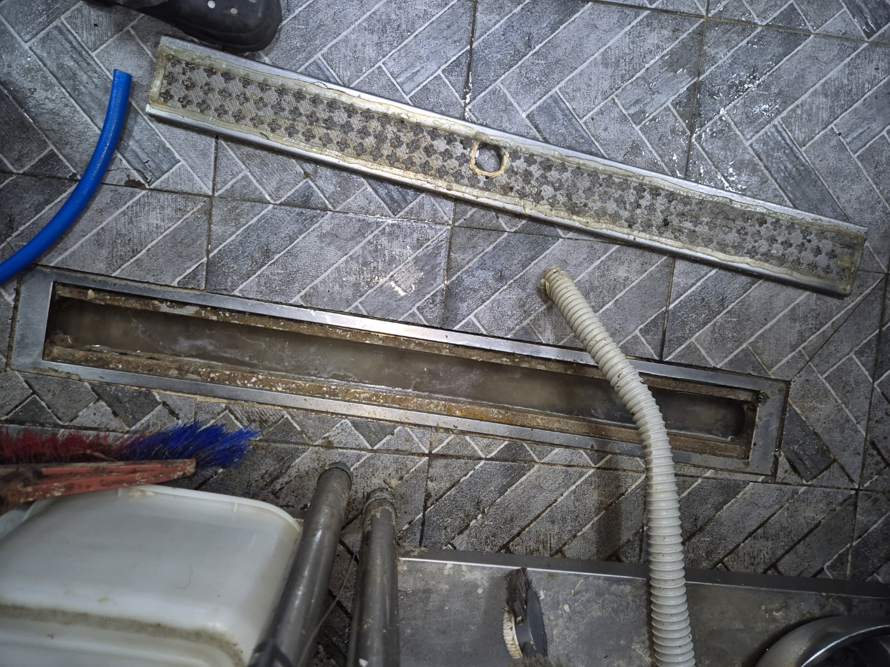
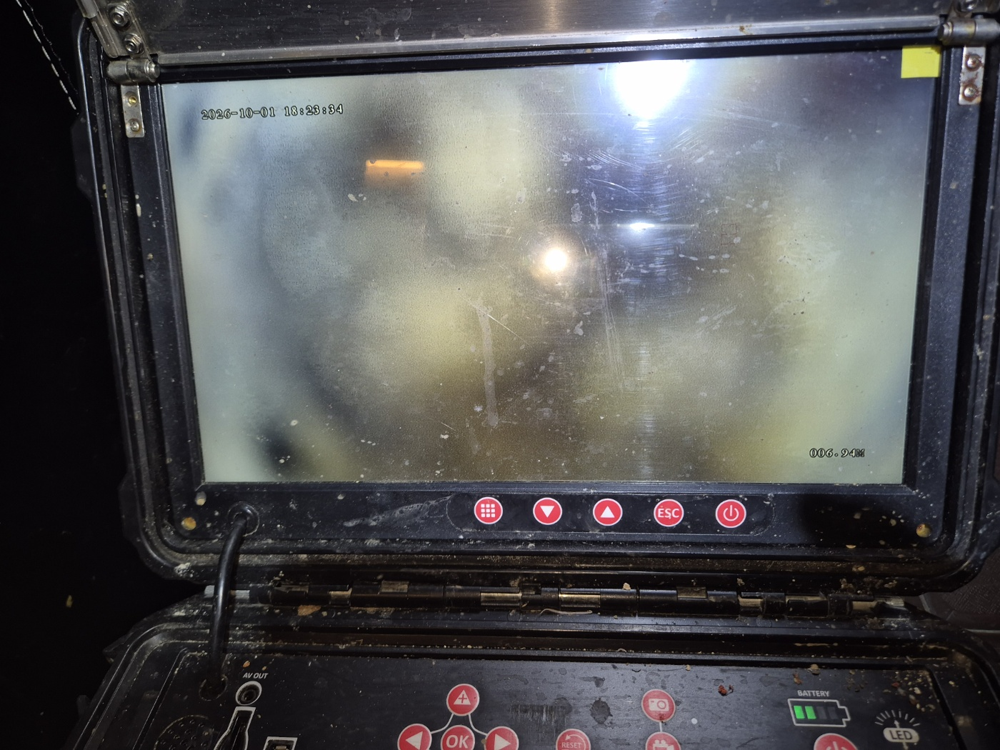

안녕하세요.. 고고고 설비입니다.. 이번에는 평택 비전동 식당 하수구막힘 현장을 소개해드릴게요. 평택시 비전동에 있는 식당에서 바닥 하수구가 막혔다는 연락을 받고 출동했는데, 저희 차량에 붙어 있는 번호를 보시고 직접 전화 주신 현장이었어요. 식당 바닥 하수구는 어떻게 확인하고 해결하는지 사진으로 정리해 봤습니다.
1. 식당 바닥 배수로 덮개 열기
주방 바닥을 따라 길게 이어진 배수로 덮개를 열고 안쪽을 확인했어요. 식당 바닥 배수로는 음식물 찌꺼기와 기름기가 흘러 들어와 쌓이기 쉬운 자리라서 막힘이 자주 생기는 곳이에요.

2. 배수구 안쪽 이물질 확인
덮개를 걷어내고 배수구 안쪽을 들여다보니 배관 입구 쪽에 찌꺼기와 이물질이 엉겨 붙어 있었어요. 겉에서 보이는 것만으로도 물이 시원하게 내려가기 어려운 상태였습니다.

3. 내시경으로 배관 안쪽 진단
내시경 카메라를 넣어서 배관 안쪽 상태를 확인했어요. 모니터에는 찌꺼기가 덩어리져서 배관 벽에 붙어 있는 모습이 보였습니다. 눈으로 직접 확인해야 어디까지 작업할지 정확하게 정할 수 있어요.

4. 석션기로 찌꺼기 흡입
석션기로 고여 있던 물과 찌꺼기를 빨아들였더니 통 안에 갈색 오물이 가득 찼어요. 이 정도 양이면 배수로가 얼마나 좁아져 있었는지 짐작이 가시죠.

5. 내시경으로 한 번 더 확인
석션으로 빨아들인 뒤에 내시경으로 배관 안쪽을 다시 한 번 확인했어요. 눈에 보이던 막힘은 정리가 됐습니다.

다만 이번 막힘은 바닥 배수로만의 문제가 아니라 메인 배관 쪽에 원인이 있어 보였어요. 그래서 메인 배관은 고압세척으로 따로 작업하시는 게 좋겠다고 사장님께 말씀드렸고, 일정은 상의해서 정하기로 했습니다.
6. 식당 하수구는 왜 자주 막힐까요?
식당 주방 하수구에는 설거지물과 함께 음식물 찌꺼기, 기름기가 계속 흘러 들어가요. 기름은 따뜻할 때는 물에 섞여 내려가다가 배관 안에서 식으면 벽에 달라붙어 굳기 시작합니다. 거기에 찌꺼기가 걸려 쌓이면 시간이 지날수록 물길이 좁아져서 결국 바닥 배수로까지 물이 넘치게 되죠. 이번 비전동 식당 하수구막힘에서 석션기 통에 갈색 오물이 가득 찬 것도 같은 이유였어요.
식당 하수구막힘, 이런 신호가 먼저 나타나요
물이 내려가는 속도가 평소보다 느려지고, 배수구에서 악취가 올라오고, 물을 많이 쓸 때 꿀렁거리는 소리가 나면 배관이 좁아지고 있다는 신호예요. 이 단계에서 점검받으면 작업도 간단하고 영업에 지장을 주는 시간도 짧아집니다.
바닥 배수구 막힘과 메인 배관 막힘은 어떻게 다를까요?
바닥 배수구에서 가까운 구간은 석션기와 내시경으로 확인해서 정리할 수 있어요. 하지만 건물 전체 하수가 모이는 메인 배관에 찌꺼기가 쌓여 있으면 바닥 배수구만 뚫어서는 얼마 지나지 않아 다시 막힐 수 있습니다. 그래서 원인이 메인 쪽에 있다고 판단되면 고압세척을 따로 안내드리고 있어요.
식당 하수구막힘 자주 묻는 질문
Q. 바닥 배수로 청소는 얼마나 자주 해야 하나요? A. 사용량에 따라 다르지만, 영업을 마치고 덮개를 열어 눈에 보이는 찌꺼기를 건져내 주시는 것만으로도 큰 도움이 됩니다. 기름기가 많은 물은 바로 배수로로 흘려보내지 않는 것이 좋아요.
Q. 작업 전에 비용을 알 수 있나요? A. 현장 상태를 확인한 뒤에 예상 비용을 먼저 안내드리고, 동의해 주신 뒤에만 작업을 진행합니다. 막힌 위치와 난이도에 따라 달라져서 현장 확인이 먼저예요.
Q. 비전동 외에 평택 다른 지역도 가능한가요? A. 평택 전 지역과 안성, 천안, 오산, 화성까지 출동하고 있습니다.
식당은 하루에도 수십 번 물을 쓰는 곳이라 배관에 찌꺼기가 빠르게 쌓여요. 물 빠짐이 느려졌다고 느껴지시면 완전히 막히기 전에 점검받아 보시는 걸 추천드립니다. 영업 중에 갑자기 하수구가 넘치는 상황이 가장 곤란하니까요.
고고고 설비는 주택, 아파트, 원룸, 상가, 공장의 생활 하수 오수 배관을 관리해 주는 업체입니다. 고고고 설비에 전화 주시면 친절상담 정확한 진단 확실한 해결로 보답해 드리겠습니다!!